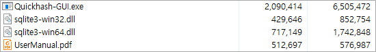
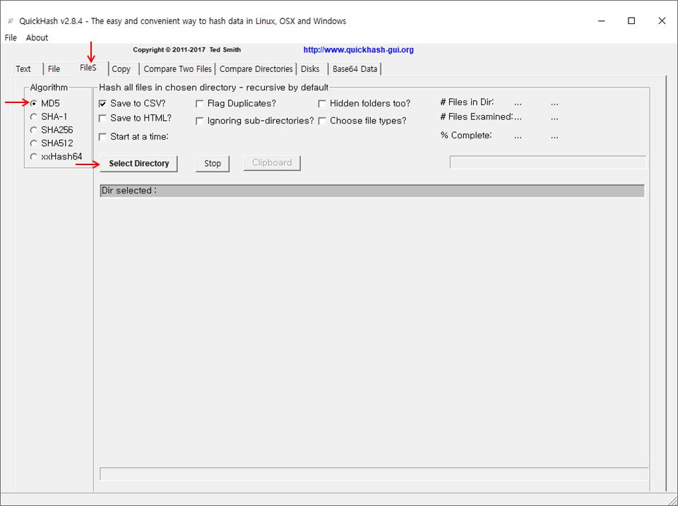
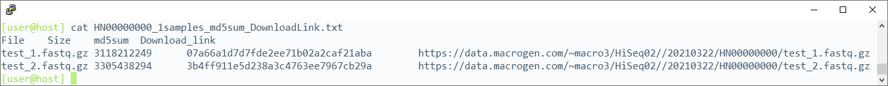
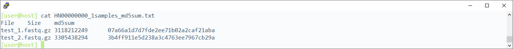
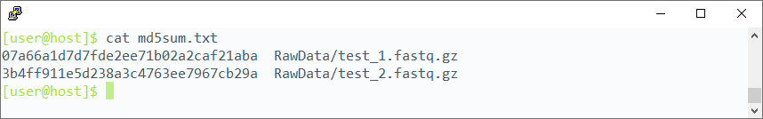
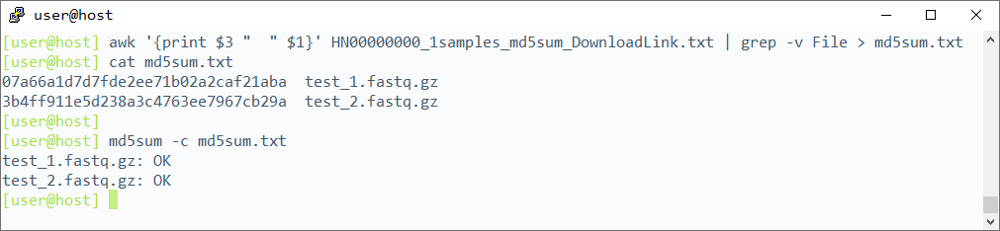

Windows does not provide a program for checking md5sum by default. An external program such as QuickHash-Windows can be used instead.


Linux systems have an internal md5sum program under /user/bin/md5sum.
md5sum has a "-c" option, which reads the md5sum from the input file and checks them simultaneously.



